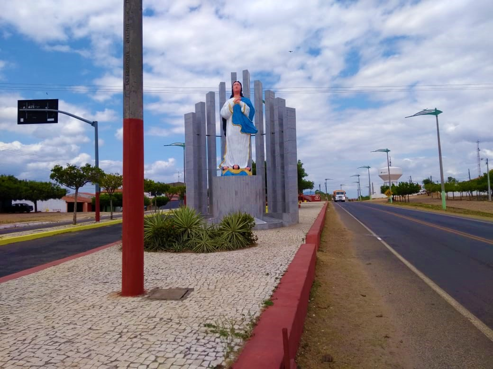
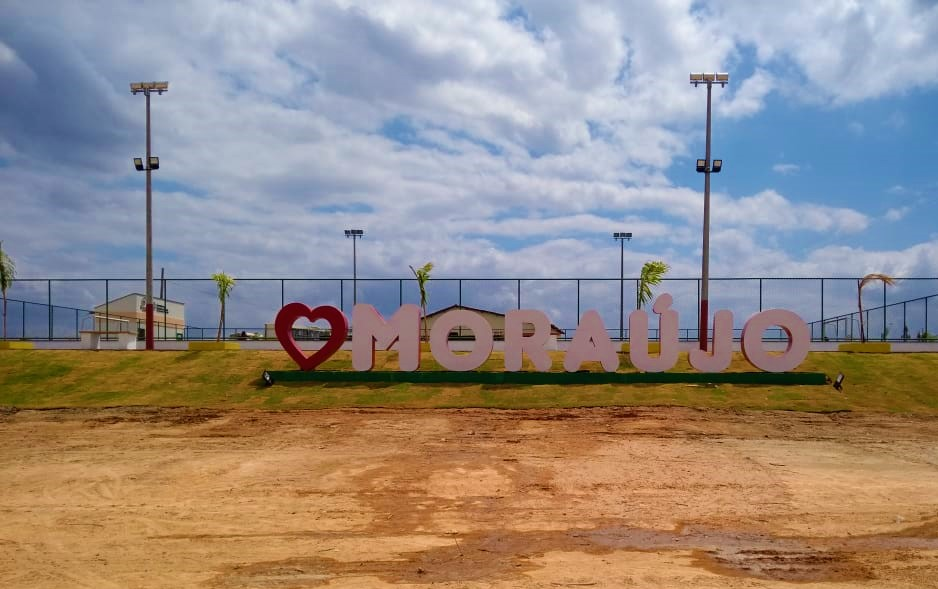
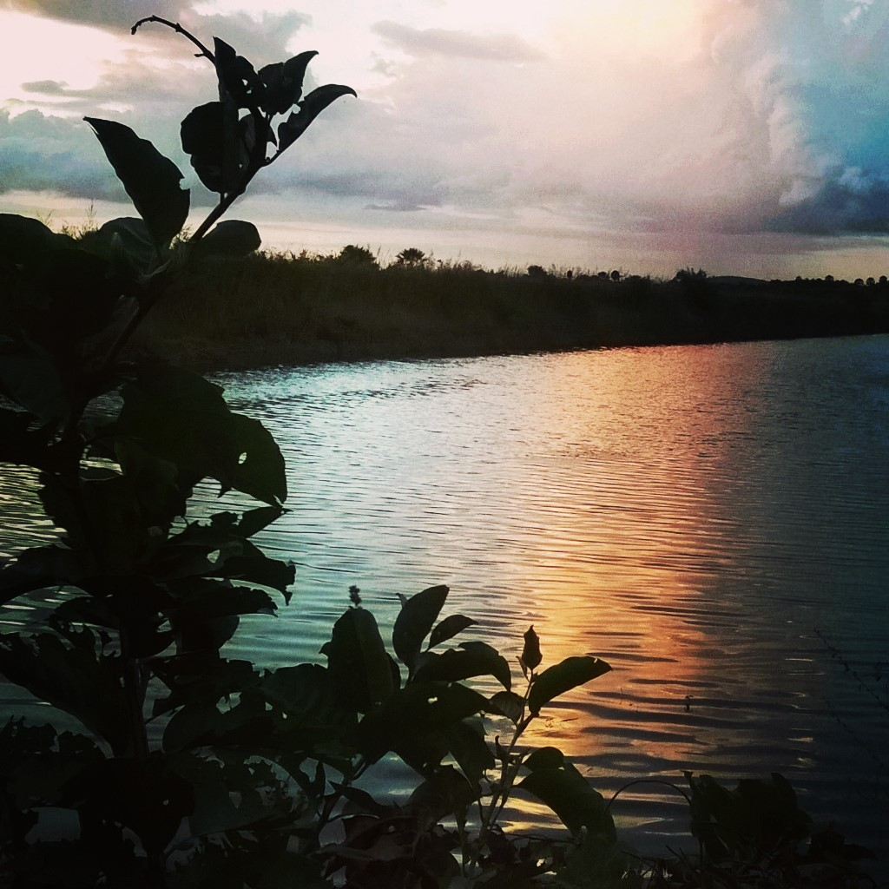

Informações técnicas sobre relevo, população, IDH etc.
| INFORMAÇÕES | |
|---|---|
| Municípios limítrofes | Coreaú, Martinópole e Uruoca |
| Fundação | 22 de novembro de 1951 |
| Área total | 415,614 km² |
| Clima | Indisponível |
| IDH | 0,594 — baixo |
| PIB | R$ 24 555,966 mil |
| INFORMAÇÕES TERRITORIAIS | |
|---|---|
| Número de habitantes | 8 724 habitantes |
| Superfície de Moraujo |
41 563 hectares
415,63 km² (160,48 sq mi) |
| Densidade populacional | 21,0 ha./km² |
| Altitude de Moraujo | 60 metros de altitude |
| Coordenadas geográficas decimais |
Latitude:
-3.47407
Longitude: -40.6734 |
| Coordenadas geográficas sexagesimais | Latitude: 3° 28' 27'' Sul , Longitude: 40° 40' 24'' Oeste |
| INFORMAÇÕES DO MUNICÍPIO | |
|---|---|
| Endereço da Prefeitura Municipal de Moraujo |
Moraujo
Prefeitura de Moraujo
Av. Prefeito Raimundo Benício, 535 Moraujo - CE, 62480-000 Brasil Work +55 (88) 3642-1264 Fax |
| Telefone da prefeitura |
(88) 3642-1264
Internacional: +55 88 3642-1264 |
| Fax |
|
| Endereço electrónicoda prefeitura |
evandromendesdasilva@sobra.org
|
| Site oficial do município | moraujo.ce.gov.br |
| INFORMAÇÕES DO ADMINISTRATIVAS | ||
|---|---|---|
| Prefeito de Moraujo | CARLOS ÁQUILA CUNHA DE QUEIROZ | |
| Partido politico | PDT | |
| INFORMAÇÕES DE TRANSPORTE | |
|---|---|
| Transporte urbano disponível | |
| Aeroporto |
Aeroporto de Sobral
43.9 km
Aeroporto Pinto Martins
65.5 km
Aeroporto Internacional Prefeito Dr.João Silva Filho
134.2 km
|
| INFORMAÇÕES DE DISTÂNCIA A OUTRAS CIDADES | ||
|---|---|---|
| São Paulo : 2325 km | Rio de Janeiro : 2180 km | Brasília : 1584 km |
| Salvador : 1084 km | Fortaleza : 238 km mais perto | Belo Horizonte : 1854 km |
| Manaus : 2151 km | Curitiba : 2611 km | Recife : 819 km |
| Goiânia : 1744 km | Belém : 899 km | Porto Alegre : 3158 km |
| Guarulhos : 2305 km | Campinas : 2270 km | São Luís : 417 km |
| Distância calculada em linha reta! | ||
Conheça mais sobre a história da Moraújo.
Seu nome primitivo era Pedrinhas e o nome atual vem da junção das famílias Moreira e Araújo. O município de Moraújo tem suas origens no início da segunda metade do século XIX com a construção de uma pequena capela em honra de Nossa Senhora da Conceição, sob a iniciativa de Guilherme dos Reis e outros fazendeiros e demais moradores da região, em torno da qual surgiram as primeiras casas, dando origem à pequena povoação de nome Pedrinhas, essa denominação perdurou até 1951, quando a povoação foi elevada à categoria de Vila e sede de distrito, do município de Coreaú. Moraújo foi elevado à categoria de município em 1957, por meio da lei estadual nº 3.920/57. O nome resulta da junção das famílias Moreira e Araújo. Até 1951, fora um povoado denominado Pedrinhas, que se tornou distrito e sede do município de Coreaú.
Saiba mais sobre os melhores lugares e o que fazer em Moraújo.
Monumento na avenida central.
Letreiros com o nome do município.
Açude e vegetação da margem.

Veja como chegar nos melhores pontos de Moraújo.